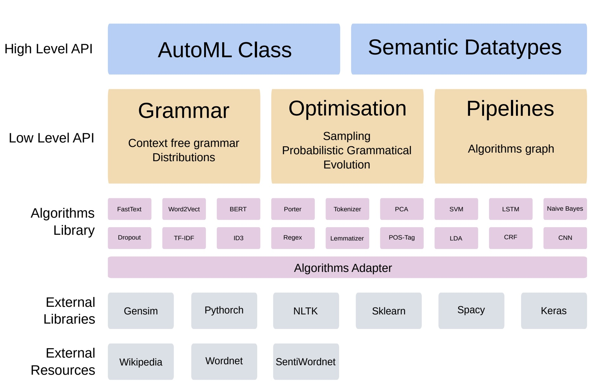

T5. Auto Machine Learning(AutoML)
Contents
14. T5. Auto Machine Learning(AutoML)#
Contenidos:
14.1. Introducción#
“I’d like to use machine learning, but I can’t invest much time” => Me gustaría usar aprendizaje de máquinas, pero no puedo invertir mucho tiempo.
Esta frase es algo que se escucha con demasiada frecuencia en la industria y de investigadores de otras disciplinas ajenas al aprendizaje de máquinas. La demanda de soluciones con muy poca implicación humana para el aprendizaje automático ha dado lugar recientemente al campo del aprendizaje automático automatizado (AutoML) [1]. El aprendizaje automático (AutoML) es el proceso de automatizar una acción aplicando el aprendizaje automático común para resolver problemas reales.
Ventaja:
El alto grado de automatización en AutoML permite que aquellos que no son expertos puedan hacer uso de modelos de aprendizaje automático sin necesitar mucha experiencia previa en dicho campo.
La automatización del proceso de aprendizaje ofrece otras ventajas, como la producción de soluciones más sencillas y una resolución más rápida.
14.2. AutoML vs estandar ML#
En una aplicación de aprendizaje automático estándar, los practicantes tienen un conjunto de datos y tienen que lidiar con distintas etapas para el diseño de su algoritmo. Un experto puede:
tener que aplicar los datos de preprocesado adecuados,
realizar métodos de ingeniería,
extracción y
selección para hacer el conjunto de datos legible para el aprendizaje automático. Siguiendo dichos pasos de preprocesado, los practicantes han de realizar
selección de algoritmo, y
optimización de hiperparámetros para maximizar el rendimiento predictivo su modelo de aprendizaje automático.
Esto es precisamente los que el AutoML persigue automatizar y liberar al practicante de repetitivas iteraciones de prueba de parámetros y estrategias.
Una desventaja son los parámetros adicionales de las herramientas AutoML, que pueden necesitar alguna ayuda para establecerse. Aunque existan dicho hiperparámetros, AutoML simplifica la aplicación de aprendizaje automático para aquellos que no son expertos.
14.3. Objetivos de automatización#
La última década ha sido testigo de una explosión de investigación y aplicaciones de aprendizaje automático; especialmente, los métodos de aprendizaje profundo (Deep Learning) han permitido avances clave en muchos dominios de aplicaciones, como la visión por computadora, el procesamiento del habla y los video juegos. Sin embargo, el rendimiento de muchos métodos de aprendizaje automático es muy sensible a una gran cantidad de decisiones de diseño, lo que constituye una barrera considerable para los nuevos usuarios. Esto es particularmente cierto en el campo en auge del aprendizaje profundo, donde los ingenieros humanos deben aplicar el proceso de seleccionar:
las arquitecturas neuronales,
los procedimientos de entrenamiento,
los métodos de regularización y
los hiper-parámetros correctos de todos estos componentes para hacer que sus redes hagan lo que se supone que deben hacer.
14.3.1. Rendimiento suficientemente bueno#
Este proceso debe repetirse para cada aplicación. Incluso los expertos a menudo se quedan con tediosos episodios de prueba y error hasta que identifican un buen conjunto de opciones para un conjunto de datos en particular. El campo del aprendizaje automático automatizado (AutoML) tiene como objetivo tomar estas decisiones de una manera basada en datos, objetiva y automatizada:
el usuario simplemente proporciona datos
y el sistema AutoML determina automáticamente el enfoque que funciona mejor.
Por lo tanto, AutoML hace que los enfoques de aprendizaje automático de vanguardia sean accesibles para los científicos del dominio que están interesados en aplicar el aprendizaje automático, pero que no tienen los recursos para aprender sobre las tecnologías de ML en detalle. Esto puede verse como una democratización del aprendizaje automático. Con AutoML, el aprendizaje automático personalizado de última generación está al alcance de todos. La máquina de aprendizaje automático puede tener varios objetivos en su proceso de automatización. Esencialmente los objetivos pueden ser agrupados en campos de preparación, ingeniería, selección de métrica y optimización de hiper-parámetros.
Preparación de datos automatizada (de datos en crudo y formatos misceláneos)
Detección automatizada de tipo columna; por ejemplo, booleano, discreto numérico, continuo numérico o texto.
Detección automatizada de intento de columna; por ejemplo, etiqueta/objetivo, campo de estratificación, característica numérica, característica de texto categórico o característica de texto libre.
Detección de tarea automatizada; por ejemplo, clasificación binaria, regresión, agrupamiento o clasificación.
Ingeniería automatizada
Selección de variable.
Extracción de variable.
Meta-aprendizaje y aprendizaje de transferencia.
Detección y manipulación de datos sesgados y/o valores desaparecidos.
Selección de modelo automatizado
Optimización de hiperparámetros del algoritmo de aprendizaje y caracterización.
Selección automatizada de métricas de evaluación o procedimientos de validación.
Comprobación automática de problemas
Detección de elementos filtrados
Detección de fallos de configuración
Resultados obtenidos de análisis automáticos.
Interfaces de usuario y visualizaciones de aprendizaje automático.
14.4. Métodos de AutoML#
Entre las vertientes más generales en la que se enfoca el AutoML nos encontramos con la Optimización de Parámetros; el Meta Aprendizaje; y la Búsqueda de Arquitecturas de Redes Neuronales. A continuación, listamos los siguientes trabajos en los que se recopila el estado de la cuestión de cada una de estas:
Optimización de hyperparametros: La optimización o ajuste de hiperparámetros es el problema de elegir un conjunto de hiperparámetros óptimos para un algoritmo de aprendizaje. Un hiperparámetro es un parámetro cuyo valor se utiliza para controlar el proceso de aprendizaje. Por el contrario, se aprenden los valores de otros parámetros (normalmente ponderaciones de los nodos). El mismo tipo de modelo de aprendizaje automático puede requerir diferentes restricciones, pesos o tasas de aprendizaje para generalizar diferentes patrones de datos. Estas medidas se denominan hiperparámetros y deben ajustarse para que el modelo pueda resolver de manera óptima el problema del aprendizaje automático. La optimización de hiperparámetros encuentra una tupla de hiperparámetros que produce un modelo óptimo que minimiza una función de pérdida predefinida en datos independientes dados. [2] La función objetivo toma una tupla de hiperparámetros y devuelve la pérdida asociada. [2] La validación cruzada se utiliza a menudo para estimar este rendimiento de generalización. [3]. La optimización de hyperparametros se suele estudiar aplicando técnicas como las que se listan a continuación:
Grid search
Random search
Bayesian optimization
Gradient-based optimization
Evolutionary optimization
Population-based
Early Stopping-based
Se recomienda la lectura del capítulo Hyperparameter Optimization [1], donde se hace una lectura concienzuda de la bibliografía.
Meta Aprendizaje: Consiste en aplicar algoritmos de ML a los metadatos de otros algoritmos de ML, de ahí la denominación alternativa: aprender a aprender.
El objetivo es entender cómo resolver problemas de aprendizaje con mayor flexibilidad, mejorando el desempeño de algoritmos existentes o induciendo al algoritmo de aprendizaje en sí. La flexibilidad es importante porque cada algoritmo está basado en una serie de asunciones sobre los datos, su sesgo inductivo. Esto quiere decir que el algoritmo solo aprenderá correctamente si su sesgo inductivo se ajusta al problema de aprendizaje (usualmente una base de datos). Por ende, un algoritmo se desempeña bien en un dominio específico, pero no en otros.
Se utilizan diferentes tipos de metadatos como:
las propiedades del problema de aprendizaje,
las del propio algoritmo (como mediciones de desempeño), o
patrones derivados directamente de los datos.
De esta manera es posible aprender, seleccionar, alterar o combinar diferentes algoritmos de IA para buscar los resultados que mejor satisfagan el problema de aprendizaje. Os recomendamos la lectura del capítulo Meta Learning [1], donde se hace una lectura concienzuda de la bibliografía al respecto.
14.4.1. Búsqueda de arquitectura neuronal (Neural Architecture Search,NAS)#
Es una técnica para automatizar el diseño de redes neuronales artificiales. Este es un modelo ampliamente utilizado en el campo del aprendizaje automático.
NAS se ha utilizado para diseñar redes que están a la par o superan las arquitecturas diseñadas a mano. Los métodos para NAS se pueden clasificar de acuerdo con el espacio de búsqueda, la estrategia de búsqueda y la estrategia de estimación del rendimiento utilizada:
El espacio de búsqueda define el (los) tipo (s) de red neuronal artificial que se pueden diseñar y optimizar.
La estrategia de búsqueda define el enfoque de exploración del espacio de búsqueda.
La estrategia de estimación del desempeño evalúa el desempeño de una posible red neurinal artificial a partir de su diseño.
NAS está estrechamente relacionado con la optimización de hiperparámetros y es un subcampo del aprendizaje automático automatizado (AutoML). Os recomendamos la lectura del capítulo Neural Architecture Search [1], donde se hace una lectura concienzuda de la bibliografía al respecto.
14.5. Sistemas de AutoML#
14.5.1. Auto-Weka#
Auto-Weka [12] ha sido uno de los primeros sistemas AutoML identificados en la literatura. Se basa en el conocido kit de herramientas de aprendizaje automático WEKA y busca en diferentes métodos de clasificación y regresión, su configuración de hiperparámetros y métodos de preprocesamiento de datos.
Todo esto está disponible a través de la interfaz gráfica con solo hacer clic en un botón, sin la necesidad de una sola línea de código.
Software: https://www.cs.ubc.ca/labs/beta/Projects/autoweka/#software
{kind=link}
Figura 1. Técnicas de aprendizaje y métodos soportados por Auto-Weka jiunto con el numero de hyper-parametros. Todos portan clasificación y los señalados con * soportan regresión. Tomado de [1].
14.5.2. Hyperopt-Sklearn#
Hyperopt-Sklearn [13] abarca la definición del espacio de búsqueda con:
24 clasificadores
12 regresores
7 metodos de preprocesamiento En total considera 65 hyperparametros: 15 boleanos, 14 categoricos, 17 discretos, y 19 variables de valores reales.
{kind=link}
Figura 2. Ejemplo de un espacio de búsqueda de hyperopt-sklearn teniendo en cuenta un paso de preprocesamiento y un segundo de clasificación.Tomado de [1].
14.5.3. Auto-sklearn#
Auto-sklearn [14] es un sistema AutoML basado en el paquete de aprendizaje automático de Python scikit-learn.
Incluye:
15 clasificadores,
14 metodos de preprocesamiento de características,
4 metodos de preprocesamiento de datos,
llegando a ngestinar hasta 110 hyperparameters
{kind=link}
Figura 3. Proceso general de optimización. Tomado de [1].
{kind=link}
Figura 4. Configuraciión estructurada del espacio de búsqueda. Tomado de [1].
El siguiente ejemplo muestra la simplicidad de invocar procediminetos con Autosklearn
>>> import autosklearn.classification
>>> cls = autosklearn.classification.AutoSklearnClassifier()
>>> cls.fit(X_train, y_train)
>>> predictions = cls.predict(X_test)
Vér más en https://automl.github.io/auto-sklearn/master/#example
14.5.4. Auto-Net: Towards Automatically-Tuned Neural Networks#
AutoNet1.0 [11]. Una extension de AutoSKlearn añadiendo algunos componentes de clasificación y regresión. Permite aprovechar las partes existentes de la canalización del aprendizaje automático:
preprocesamiento de funciones,
preprocesamiento de datos
y construcción de conjuntos. Aquí, limitamos Auto-Net a redes neuronales de alimentación hacia adelante completamente conectadas (full connceted), ya que se aplican a una amplia gama de conjuntos de datos diferentes; diferimos la extensión a otros tipos de redes neuronales, como las redes neuronales convolucionales (CNN) o recurrentes(RNN).
{kind=link}
Figura 5. Configuración del espacio de búsqueda con AutoNet 1.0.
AutoNet 2.0. Se diferencia de AutoNet 1.0 principalmente en los siguientes tres aspectos:
utiliza PyTorch en lugar de Lasagne como biblioteca de aprendizaje profundo (DeepLearning)
utiliza un espacio de configuración más grande que incluye técnicas de aprendizaje profundo actualizadas, arquitecturas modernas (como ResNets) e incluye representaciones más compactas del espacio de búsqueda, y
aplica BOHB en lugar de SMAC para trabajar con la red neuronal de manera más eficiente.
la configuración de AutoNet 2.0 tiene hasta 112 hyperparametros y está más centrado en descibir configuraciones de redes neuronales.

Figura 6. Configuración del espacio de búsqueda con AutoNet 2.0
14.5.5. TPOT: A Tool for Automating Machine Learning#
TPOT es un contenedor para el paquete de aprendizaje automático de Python, scikitlearn. Cada operador de flujo de aprendizaje automático (es decir, GP primitivo) en TPOT corresponde a un algoritmo de aprendizaje automático, como un modelo de clasificación supervisado o un escalador de características estándar. Todas las implementaciones de los algoritmos de aprendizaje automático son de scikit-learn [excepto GBoost] [9] [10].
Operadores de clasificación supervisados:
DecisionTree,
RandomForest,
eXtreme Gradient Boosting Classifier (de XGBoost),
LogisticRegression,
y KNearestNeighborClassifier.
Los operadores de clasificación almacenan las predicciones del clasificador como una nueva característica (i.e. estrategia memoria), así como la clasificación para la canalización.
Operadores de preprocesamiento de funciones:
StandardScaler,
RobustScaler,
MinMaxScaler,
MaxAbsScaler,
RandomizedPCA,
Binarizer
y PolynomialFeatures.
Los operadores de preprocesamiento modifican el conjunto de datos de alguna manera y devuelven el conjunto de datos modificado.
Operadores de selección de características:
VarianceThreshold,
SelectKBest,
SelectPercentile,
SelectFwe,
y Eliminación de características recursivas RFE.
Los operadores de selección de características reducen la cantidad de características en el conjunto de datos utilizando algunos criterios y devuelven el conjunto de datos modificado.
14.5.6. AutoGOAL: Automatic Generation, Optimization And Artificial Learning#
AutoGOAL es un marco para encontrar el mejor programa (Pipeline) para resolver un problema dado. AutoGOAL proporciona un conjunto de componentes de bajo nivel para definir diferentes espacios de búsqueda y buscar de manera eficiente en ellos. En el contexto específico del aprendizaje automático, AutoGOAL también proporciona componentes de alto nivel que se pueden usar como caja negra en casi cualquier tipo de problema y formato de conjunto de datos.
{kind=link}
Figura 6. Arquitectura Autogoal[4] [5]
Simplicidad para usar AutoGOAL:
!pip install autogoal[contrib]==0.4.4
from autogoal.datasets import cars
from autogoal.ml import AutoML
from sklearn.preprocessing import LabelEncoder
encoder = LabelEncoder()
X, y,*_ = cars.load()
y = encoder.fit_transform(y)
automl = AutoML()
automl.fit(X, y)
# Reporte del mejor pipeline
print(automl.best_pipeline_)
print('score: ' + str(automl.best_score_))
14.6. Competiciones y Benchmarks de AutoML#
Hemos identificado entornos científicos de competición y benchmarks. Estas competiciones han implicado los siguientes dominios de aplicación [8]:
biología y medicina,
ecología,
gestión de la energía y la sostenibilidad,
procesamiento de imágenes,
texto,
audio,
voz,
vídeo y otros datos de sensores,
gestión y publicidad de redes sociales en Internet,
análisis de mercado y predicción financiera.
Las distintas competiciones hasta la fecha son:
14.7. Bibliogarfía#
[1] Hutter, F., Kotthoff, L., & Vanschoren, J. (2019). Automated machine learning: methods, systems, challenges (p. 219). Springer Nature.
[2] Claesen, Marc; Bart De Moor (2015). “Hyperparameter Search in Machine Learning”. arXiv:1502.02127 [cs.LG].
[3] Bergstra, James; Bengio, Yoshua (2012). “Random Search for Hyper-Parameter Optimization” (PDF). Journal of Machine Learning Research. 13: 281–305.
[4] Zoph, Barret; Le, Quoc V. (2016-11-04). “Neural Architecture Search with Reinforcement Learning”. arXiv:1611.01578 [cs.LG]
[5] Estévez-Velarde, S., Gutiérrez, Y., Almeida-Cruz, Y., & Montoyo, A. (2020). General-purpose hierarchical optimisation of machine learning pipelines with grammatical evolution. Information Sciences, 543, 58-71.
[6] Estévez-Velarde, S., Piad-Morffis, A., Vázquez, Y.G., Montoyo, A., Muñoz-Guillena, R., & Cruz, Y.A. (2020). Demo Application for the AutoGOAL Framework. COLING.
[7] (The Automatic Statistician. Christian Steinruecken and Emma Smith and David Janz and James Lloyd and Zoubin Ghahramani, 2019.)[https://www.automl.org/wp-content/uploads/2020/01/automl_ch9.txt]
[8] Analysis of the AutoML Challenge series 2015-2018 . Isabelle Guyon and Lisheng Sun-Hosoya and Marc Boull ́e and Hugo Jair Escalante and Sergio Escalera and Zhengying Liu and Damir Jajetic and Bisakha Ray and Mehreen Saeed and Michele Sebag and Alexander Statnikov and Wei-Wei Tu and Evelyne Viegas. 2018.
[9] TPOT: A Tool for Automating Machine Learning. Randal S. Olson and Jason H. Moore. 2018.
[10] The Automatic Statistician. Christian Steinruecken and Emma Smith and David Janz and James Lloyd and Zoubin Ghahramani. 2018.
[11] Towards Automatically-Tuned Neural Networks. Hector Mendoza and Aaron Klein and Matthias Feurer and Jost Tobias Springenberg and Matthias Urban and Michael Burkart and Max Dippel and Marius Lindauer and Frank Hutter. 2018.
[12] Auto-WEKA. Lars Kotthoff and Chris Thornton and Holger H. Hoos and Frank Hutter and Kevin Leyton-Brown. 2013.
[13] Hyperopt-Sklearn. Brent Komer and James Bergstra and Chris Eliasmith. 2019.
[14] Auto-sklearn: Efficient and Robust Automated Machine Learning. Matthias Feurer and Aaron Klein and Katharina Eggensperger and Jost Tobias Springenberg and Manuel Blum and Frank Hutter. 2019.